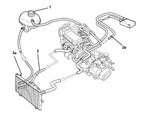
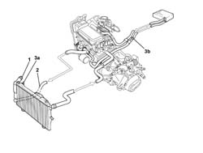
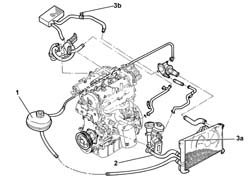
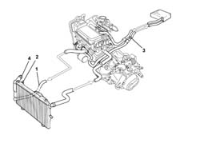

0010T20 coolant change
- Path
- Procedures > 00 MAINTENANCE > 0010 NEW UNITS AND PLANNED MAINTENANCE > 0010T VEHICLE OIL AND FLUIDS > 0010T20 coolant change
- Kind
- repair procedure (removal / refitting; the operation number is the code)
- Applies to
- all engines; all production periods
- Interactive page
- https://sloeber94.github.io/elrnDB-fPnd/en/#/2752378
Applies to: engines: 1.1, 1.2 8v; all production periods; only with equipment: Air Conditioner
Drain the engine cooling system following the instructions below.
1. Unscrew the expansion tank.
Position a suitable container beneath the radiator to collect the coolant.
2. Disconnect the lower radiator hose and drain the engine coolant.
3. Open the bleed valves on the radiator (3a) and the heater coolant pipe (3b) and wait until the cooling system is completely drained.

Applies to: engines: 1.1, 1.2 8v; all production periods; only with equipment: Heater
Drain the engine cooling system following the instructions below.
1. Unscrew the expansion tank.
Position a suitable container beneath the radiator to collect the coolant.
2. Disconnect the lower radiator hose and drain the engine coolant.
3. Open the bleed valves on the radiator (3a) and the heater coolant pipe (3b) and wait until the cooling system is completely drained.

Applies to: engines: 1.3 JTD 16v; all production periods
Drain the engine cooling system following the instructions below.
1. Unscrew the expansion tank.
Position a suitable container beneath the radiator to collect the coolant.
2. Disconnect the lower radiator hose and drain the engine coolant.
3. Open the bleed valves on the radiator (3a) and the heater coolant pipe (3b) and wait until the cooling system is completely drained.

Applies to: engines: 1.1, 1.2 8v; all production periods; only with equipment: Air Conditioner
Fill the cooling system as follows:
Take a sufficient quantity of coolant.
 | Type | Component | Name | Qty. |
|---|---|---|---|---|
- | Fluid (l) | ENGINE COOLING CIRCUIT | PARAFLU UP | 4.6 |
1. Connect the lower engine radiator hose and secure with a new collar
Gently introduce coolant into the reservoir taking care not to exceed the MAX reference.
2. Open the bleed valve on the radiator as soon as coolant begins to emerge from the threaded hole in the bleed valve.
3. Continue refilling the system and tighten the bleed screw on the heater pipe as soon as engine coolant comes out.
Complete the engine coolant refilling operation when the MAX reference mark on the reservoir is reached.
4. Close the expansion tank cap.
Start up the engine and keep it idling for at leas 2 minutes.
Pump the accelerator at intervals gradually to take engine speed up to 3000 rpm. This operation should be carried out until the engine cooling fan comes on at least three times.
Turn off the engine and wait for the coolant to cool down.
Check that the coolant level is between the MIN and MAX marks on the expansion tank.
If necessary, top up the level by unscrewing the cap and adding coolant.
| Type | Component | Name | Qty. |
|---|---|---|---|---|
- | Fluid (l) | ENGINE COOLING CIRCUIT | PARAFLU UP | 4.6 |
Applies to: engines: 1.1, 1.2 8v; all production periods; only with equipment: Heater
Fill the cooling system as follows:
Take a sufficient quantity of coolant.
| Type | Component | Name | Qty. |
|---|---|---|---|---|
- | Fluid (l) | ENGINE COOLING CIRCUIT | PARAFLU UP | 4.48 |
1. Connect the lower engine radiator hose and secure with a new collar
Gradually introduce coolant into the reservoir until fluid comes out of the bleed valve on the radiator.
2. Open the bleed valve on the radiator as soon as coolant begins to emerge from the threaded hole in the bleed valve.
3. Continue refilling the system and tighten the bleed screw on the heater pipe as soon as engine coolant comes out.
Complete the engine coolant refilling operation when the MAX reference mark on the reservoir is reached.
4. Close the expansion tank cap.
Start up the engine and keep it idling for at leas 2 minutes.
Pump the accelerator at intervals gradually to take engine speed up to 3000 rpm. This operation should be carried out until the engine cooling fan comes on at least three times.
Turn off the engine and wait for the coolant to cool down.
Check that the coolant level is between the MIN and MAX marks on the expansion tank.
If necessary, top up the level by unscrewing the cap and adding coolant.
| Type | Component | Name | Qty. |
|---|---|---|---|---|
- | Fluid (l) | ENGINE COOLING CIRCUIT | PARAFLU UP | 4.48 |

Applies to: engines: 1.3 JTD 16v; all production periods
Fill the cooling system as follows:
Take a sufficient quantity of coolant.
| Type | Component | Name | Qty. |
|---|---|---|---|---|
- | Fluid (l) | ENGINE COOLING CIRCUIT | PARAFLU' UP | 6.5 |
1. Connect the lower engine radiator hose and secure with a new collar
Gently introduce coolant into the reservoir taking care not to exceed the MAX reference.
2. Open the bleed valve on the radiator as soon as coolant begins to emerge from the threaded hole in the bleed valve.
3. Continue refilling the system and tighten the bleed screw on the heater pipe as soon as engine coolant comes out.
Complete the engine coolant refilling operation when the MAX reference mark on the reservoir is reached.
4. Close the expansion tank cap.
Start up the engine and keep it idling for at least 2 minutes.
Pump the accelerator at intervals gradually to take engine speed up to 3000 rpm. This operation should be carried out until the engine cooling fan comes on at least three times.
Turn off the engine and wait for the coolant to cool down.
Check that the coolant level is between the MIN and MAX marks on the expansion tank.
If necessary, top up the level by unscrewing the cap and adding coolant.
| Type | Component | Name | Qty. |
|---|---|---|---|---|
- | Fluid (l) | ENGINE COOLING CIRCUIT | PARAFLU' UP | 6.5 |
Topics that link to this page (31)
- 1004B10 power unit with manual gearbox - r + r
- 1004B12 power unit with manual gearbox - r+r for versions with a/c
- 1004B13 POWER UNIT WITH MECHANIC TRANSMISSION - R.R. FOR MODELS WITH AIR-CONDITIONER AND FOUR-WHEEL DRIVE
- 1016C10 SINGLE CYLINDER HEAD, REMOVED - OVERHAUL
- 1016C11 SINGLE CYLINDER HEAD-R R GASKET FOR VERSIONS WITH AIR CONDITIONER
- 1020B12 CHAIN-DRIVE VALVE GEAR COVER - R.R. AND GASKET REPLACEMENT FOR MODELS WITH AIR-CONDITIONER
- 1028H20 piston with connecting rod - r r
- 1028H21 piston with connecting rod - r r
- 1032A12 CHAIN AND GEARS for timing system - R.R. for timing or Replacement.
- 1032B47 toothed drive pulley - r r for versions with air conditioner
- 1032B62 a/c duct pulley - r r
- 1032C40 Timing CHAIN TENSIONER PLATE - R.R.
- 1060G14 engine coolant temperature sensor - r r
- 1072B51 Air CHAMBER - R.R. for versions with air conditioning
- 1080C82 E.G.R. - VALVE HEAT EXCHANGER ASSEMBLY - Connector PIPES - R.R.
- 1084B16 engine oil pump - r+r vehicles with a/c
- 1084B26 emgine oil intake duct - r r
- 1084B45 RIGID air supply PIPE between air-air heat exchanger and intermediate hose - R.R.
- 1084C12 Engine oil HEAT EXCHANGER, complete with engine oil filler and filter - R.R.
- 1088B20 engine cooling radiator - r + r
- 1088B24 engine cooling radiator - r r for air conditioned versions
- 1088C10 water pump - r + r
- 1088C12 water pump - r+r for versions with air conditioner
- 1088C14 water pump - r + r with drive belt removed
- 1088C30 thermostat unit - r+r
- 1088C40 thermostat- r + r
- 1088D10 lower sleeve for coolant outlet from radiator - r + r
- 1088D14 upper sleeve for coolant inlet to radiator - r + r
- 1088D24 rigid pipe for coolant inlet to water pump - r + r
- 1088D26 rigid intake pipe to water pump - r+r for versions with a/c
- 1088D53 RIGID supply or return PIPES for ENGINE OIL HEAT EXCHANGER - R.R.